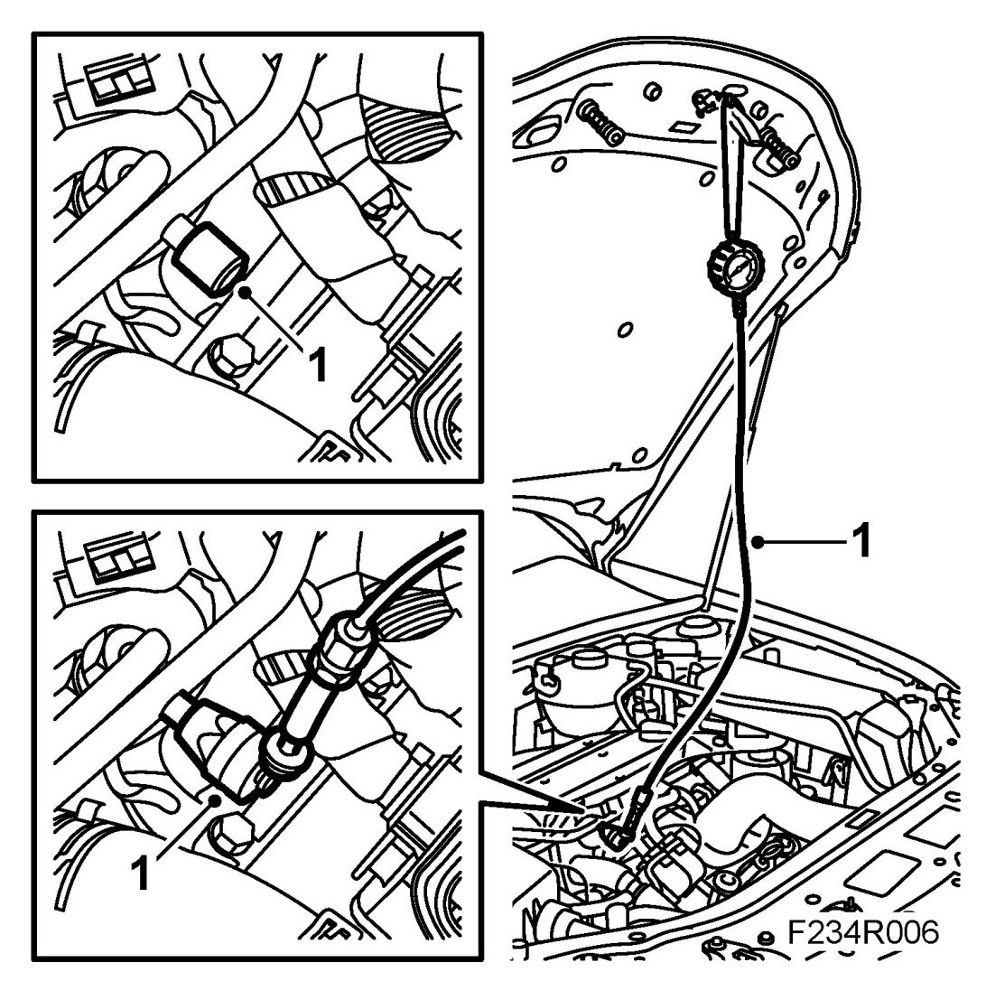
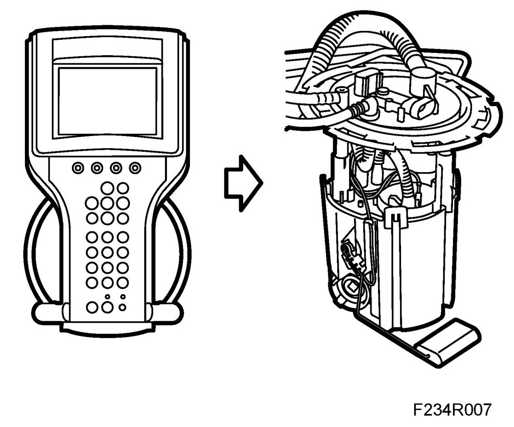

Checking Residual Pressure
Checking Residual Pressure
WARNING:
Checking residual pressure involves partial dismantling of the car's fuel system. The following points must therefore be observed in connection with this work:
- Ensure good ventilation. If there is approved ventilation for extraction of fuel fumes then this must be used.
- Wear protective gloves. Prolonged exposure of the hands to fuel can cause irritation of the skin.
- Have a fire extinguisher class BE at hand. Be aware of the risk for sparks, i.e. in connection with circuit breaking, short-circuiting, etc.
- Absolutely no smoking.
- Use protective goggles.
1. Unscrew the valve cap. Connect 83 93 852 Pressure measuring equipment, fuel and oil and 83 94 744 Adapter, fuel pressure gauge. Connect the adapter with "safety on" to the fuel rail. "Safety off" the adapter.

2. Run the pump with the diagnostic tool until the pressure gauge stops rising. Stop the pump. The residual pressure after 20 minutes must be min. 2.3 bar (33 psi).

3. Take a reading on the pressure gauge equipment.
4. "Safety on" the adapter and remove the pressure measuring equipment from the service nipple. Wipe up any fuel spill with a rag.